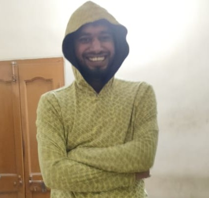

ग्यानेंद्र कुमार
हमारा भाई, हमारा सच्चा दोस्त और एक काबिल इंजीनियर
हमारा दोस्त ग्यानेंद्र सिर्फ़ हमारा साथी नहीं है, वो हमारी ज़िंदगी का सबसे प्यारा हिस्सा है। सच कहें तो हमें उसका असली महत्व तब समझ आया, जब हमें पता चला कि वो एक बहुत बड़ी बीमारी से लड़ रहा है। ये जानकर हमारे दिल टूट गए कि ये सब अचानक और इतनी जल्दी हो रहा है। पहले तो हम सबने उसे हमेशा taken for granted ही समझा था। उसकी हंसी, उसका हमें डाँटना, बार-बार समझाना — ये सब हमें कभी-कभी झुंझलाहट लगते थे। लेकिन अब ये सब हमें खज़ाने जैसे लगते हैं। अब हर छोटी बात मायने रखती है — जब वो हमारी टांग खींचता है, हमें motivate करता है, या बस हमारे साथ बैठा होता है। अब लगता है कि यही पल हमारी सबसे बड़ी दौलत हैं। ग्यानेंद्र हमेशा दूसरों के लिए जीता है, हमें बेहतर इंसान बनाने के लिए। और आज जब वो मुश्किल वक़्त से गुज़र रहा है, तो हमें — उसके दोस्तों को — उसके लिए खड़े होना है। हम चाहते हैं कि लोग सिर्फ़ उसकी बीमारी न देखें, बल्कि उस इंसान को देखें जिसने हमेशा अपने आसपास सबकी ज़िंदगी आसान बनाने की कोशिश की। दोस्तों, हमें उसकी मुस्कान, उसकी बातें और उसकी मौजूदगी चाहिए — और इसके लिए हमें उसकी मदद करनी ही होगी। हर छोटा-सा योगदान, हर दुआ उसके लिए उम्मीद का नया दरवाज़ा खोल सकती है। हम सब मिलकर ग्यानेंद्र को ये जंग जीतने का हौसला देंगे। ✨
अब हमें सच में खुशकिस्मत महसूस होता है जब ग्यानेंद्र हमसे पूछता है "कैसा है दिन?" — वो सवाल जो पहले हमें बेकार और बोरिंग लगता था। जब वो हमें डाँटता है कि समय पर घर आओ, ज़िम्मेदार बनो — अब वो भी हमें अपनापन लगता है। हमें पता है कि एक दिन वो सवाल पूछने वाला, वो डाँटने वाला शख़्स शायद हमारे बीच न हो। यही सोच हमें भीतर तक हिला देती है। आज हमें उसकी हर छोटी आवाज़ मायने रखती है — स्कूल के बाद उसकी बाइक/कार की आवाज़ सुनना, उसकी हँसी सुनना, यहाँ तक कि उसकी हल्की सी खाँसी भी हमें सुकून देती है। क्योंकि इसका मतलब है — वो अब भी हमारे साथ है। अब भी हमारा ग्यानेंद्र है।
हमारा दोस्त ग्यानेंद्र एक IT इंजीनियर है, लेकिन उसे इलेक्ट्रिक सर्किट्स का ऐसा ज्ञान है कि जैसे ये उसके लिए बच्चों का खेल हो। उसे सबसे मुश्किल सर्किट भी बड़ी आसानी से जोड़ते देखना हमें हमेशा हैरान कर देता है। वो अक्सर हमें ऐसी-ऐसी बातें बता देता है जो हममें से किसी ने कभी सोची भी नहीं होतीं — जैसे कौन-सा कनेक्शन किस वजह से fail होगा, कौन-सी वायर कहाँ लगानी है, और किस तरह से एक छोटा-सा बदलाव पूरा सिस्टम बदल देता है। उसके लिए ये सब normal है, लेकिन हमारे लिए जादू से कम नहीं। सच कहें तो उसे circuits के बारे में बात करते देखना ऐसा लगता है जैसे कोई बच्चा अपने खिलौनों से खेल रहा हो — पूरी लगन और पूरी खुशी के साथ। और यही उसकी खूबी है — चाहे वो coding हो या circuits, वो हर चीज़ में दिल से उतर जाता है। शायद यही वजह है कि हर कोई कहता है कि ग्यानेंद्र सिर्फ़ एक इंजीनियर नहीं, बल्कि real problem solver है।
कितना शानदार दोस्त है हमारा ग्यानेंद्र… लेकिन आज वो मुसीबत में है।.
ये ब्रेस्ट कैंसर है। उसे तुरंत ऑपरेशन की ज़रूरत है।
कृपया हमारे दोस्त की ज़िंदगी बचाने में मदद करें — ऑपरेशन फंड में अपना योगदान दें और उसे अपनी दुआओं में ज़रूर शामिल करें।
दान करने के लिए नीचे स्कैन करें

कोई भी राशि हमारे लिए अमूल्य होगी!